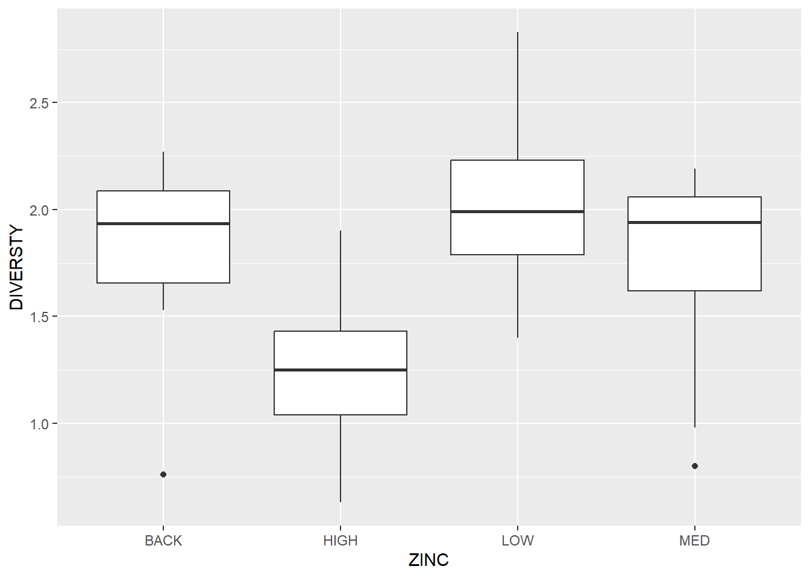
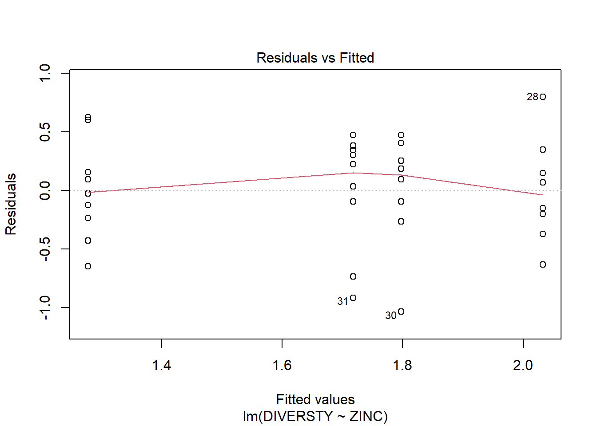
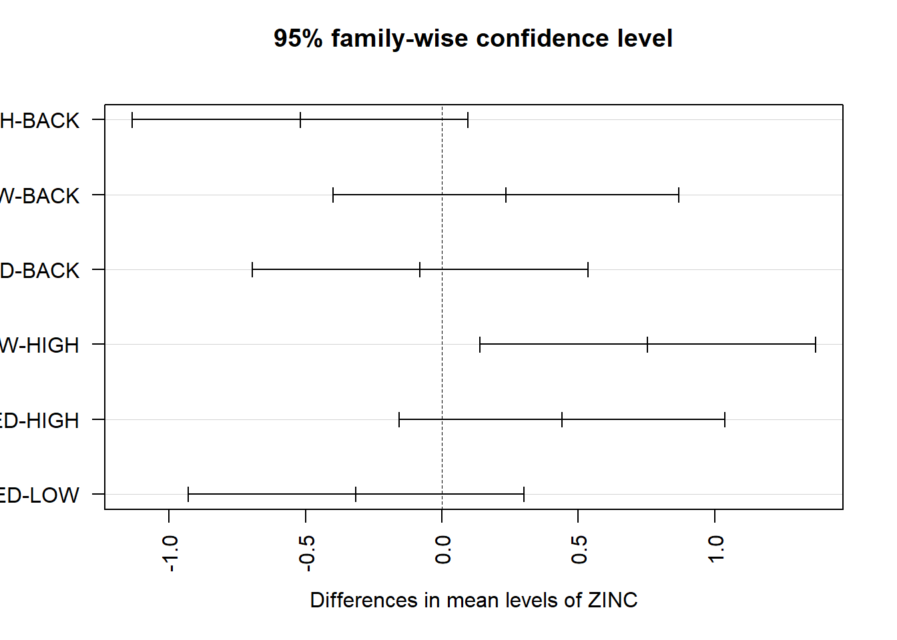

# get thedata
df <- read.csv("data/medley.csv")One-way ANOVA
ANOVA (Analysis of Variance) is a statistical method used to compare the means of three or more groups to determine if there are significant differences among them. It helps test the hypothesis that the means of different groups are equal. ANOVA essentially examines the variation within groups and between groups to assess whether the observed differences in sample means are due to chance or reflect true differences in the population.
Assumptions
ANOVA relies on several key assumptions to ensure the validity of its results. If these assumptions are violated, the results of the ANOVA test may not be reliable. Here are the main assumptions:
1. Independence of Observations:
Each observation in the dataset must be independent of all others. This means that the outcome of one observation should not influence the outcome of another.
How to check: This assumption is generally met by ensuring a proper study design (e.g., random sampling or random assignment).
2. Normality:
The residuals (differences between observed and predicted values) within each group should be approximately normally distributed.
How to check: You can assess normality by using:
A Q-Q plot (quantile-quantile plot) of the residuals.
Statistical tests like the Shapiro-Wilk test or Kolmogorov-Smirnov test (though these are sensitive in large datasets).
Note: ANOVA is robust to moderate deviations from normality, especially when sample sizes are large and approximately equal across groups.
3. Homogeneity of Variances (Homoscedasticity):
The variance within each group should be approximately equal (i.e., the spread of the data within each group should be similar).
How to check:
Use Levene’s Test or Bartlett’s Test to formally test for equality of variances.
Alternatively, inspect boxplots or use graphical methods to evaluate variance homogeneity.
4. Additivity and Linearity:
The relationship between the dependent variable and the predictors (in the case of two-way ANOVA) should be additive and linear.
Additivity implies that the effect of one factor should not depend on the levels of another factor (no interaction effects).
Linearity assumes a linear relationship between the predictors and the outcome variable.
5. Fixed Effects:
- ANOVA assumes that the factors or groups being analyzed are fixed effects, meaning they are pre-determined and not randomly sampled from a larger population.
Consequences of Violating Assumptions:
Violation of Independence: This is critical. Violations can severely compromise the test’s results, leading to misleading conclusions.
Violation of Normality: If violated and the sample size is small, the ANOVA may produce inaccurate p-values. For larger sample sizes, ANOVA is relatively robust to this violation.
Violation of Homogeneity of Variances: This can inflate the type I error rate (false positives) or type II error rate (false negatives). Use Welch’s ANOVA if this assumption is violated.
How to Address Violations:
Transformations (e.g., log or square root transformations) can sometimes address issues with normality or unequal variances.
Use non-parametric alternatives like the Kruskal-Wallis test when normality and homoscedasticity assumptions are strongly violated.
If variances are unequal, use Welch’s ANOVA as a more robust alternative to traditional ANOVA.
By ensuring these assumptions are met (or using appropriate alternatives when they are violated), you can make valid inferences from ANOVA results.
Data we’ll use: medley.csv (chap 8), boîte 8.1 p.174 Quinn & Keough
Box 8.1 Worked example: diatom communities in metalaffected streams
Medley & Clements (1998) sampled a number of stations (between four and seven) on six streams known to be polluted by heavy metals in the Rocky Mountain region of Colorado, USA. They recorded zinc concentration, and species richness and species diversity of the diatom community and proportion of diatom cells that were the early-successional species, Achanthes minutissima.
Species diversity versus zinc-level group
DT::datatable(df)# STREAM has 6 groups
table(df$STREAM)
Arkan Blue Chalk Eagle Snake Splat
7 7 5 4 5 6 # ZINC has 4 groups
table(df$ZINC)
BACK HIGH LOW MED
8 9 8 9 Calculating ANOVA
The first analysis compares mean diatom species diversity (response variable) across the four zinc-level groups (categorical predictor variable), zinc level treated as a fixed factor. The \(H_0\) was no difference in mean diatom species diversity between zinc-level groups. The results from an analysis of variance from fitting a linear model with zinc level as the predictor variable were as follows.
| Source | SS | df | MS | F | P-value |
|---|---|---|---|---|---|
| Zinc level | 2.567 | 3 | 0.856 | 3.939 | 0.018 |
| Residual | 6.516 | 30 | 0.217 | ||
| Total | 9.083 | 33 |
\(H_0\): The means of the different groups are the same.
\(H_1\): At least one sample mean is not equal to the others.
P-value < 0.05 = Reject \(H_0\).
model1 <- lm(DIVERSTY ~ ZINC, data = df)
anova(model1)Analysis of Variance Table
Response: DIVERSTY
Df Sum Sq Mean Sq F value Pr(>F)
ZINC 3 2.5666 0.85554 3.9387 0.01756 *
Residuals 30 6.5164 0.21721
---
Signif. codes: 0 '***' 0.001 '**' 0.01 '*' 0.05 '.' 0.1 ' ' 1Other way of getting ANOVA
model2 <- aov(DIVERSTY ~ ZINC, data = df)
summary(model2) Df Sum Sq Mean Sq F value Pr(>F)
ZINC 3 2.567 0.8555 3.939 0.0176 *
Residuals 30 6.516 0.2172
---
Signif. codes: 0 '***' 0.001 '**' 0.01 '*' 0.05 '.' 0.1 ' ' 1Checking ZINC groups in terms of DIVERSTY
library(ggplot2)
ggplot(data = df, aes(x = ZINC, y = DIVERSTY)) +
geom_boxplot()
Boxplots of species diversity against group showed no obvious skewness. Two sites with low species diversity were highlighted in the background and medium zinc groups as possible outliers.
Residual plot
plot(model1, which = 1)
The residual plot from this model did not reveal any outliers or any unequal spread of the residuals, suggesting the assumptions of the ANOVA were appropriate.
Levene-median test
\(H_0\): no difference in variances of species diversity between zinc-level groups
\(H_1\): different variances of species diversity between zinc-level groups
library(car)
leveneTest(DIVERSTY ~ ZINC, data = df, center = "median")Levene's Test for Homogeneity of Variance (center = "median")
Df F value Pr(>F)
group 3 0.0195 0.9962
30 P-value > 0.05: \(H_0\) was not rejected.
Levene-mean test
\(H_0\): no difference in variances of species diversity between zinc-level groups \(H_1\): different variances of species diversity between zinc-level groups
leveneTest(DIVERSTY ~ ZINC, data = df, center = "mean")Levene's Test for Homogeneity of Variance (center = "mean")
Df F value Pr(>F)
group 3 0.0867 0.9668
30 P-value > 0.05: \(H_0\) was not rejected.
Additionally, Levene’s test produced no evidence that the \(H_0\) of no differences in variances of species diversity between the zinc-level groups should be rejected (Levene-mean: \(F_{3,30} = 0.087, P = 0.967\); Levene-median: \(F_{3,30} = 0.020, P = 0.996\))
Tukey’s pairwise comparison
Tukey’s pairwise comparison of group means: mean differences with Tukey adjusted P-values for each pairwise comparison in brackets.
| Background | Low | Medium | High | |
|---|---|---|---|---|
| Background | 0.000 (1.000) | |||
| Low | 0.235 (0.746) | 0.000 (1.000) | ||
| Medium | 0.080 (0.985) | 0.315 (0.515) | 0.000 (1.000) | |
| High | 0.520 (0.122) | 0.755 (0.012) | 0.440 (0.209) | 0.000 (1.000) |
Let’s check in R!
# we need to use the second model with the function aov()
TukeyHSD(model2, conf.level=.95) Tukey multiple comparisons of means
95% family-wise confidence level
Fit: aov(formula = DIVERSTY ~ ZINC, data = df)
$ZINC
diff lwr upr p adj
HIGH-BACK -0.51972222 -1.1355064 0.09606192 0.1218677
LOW-BACK 0.23500000 -0.3986367 0.86863665 0.7457444
MED-BACK -0.07972222 -0.6955064 0.53606192 0.9847376
LOW-HIGH 0.75472222 0.1389381 1.37050636 0.0116543
MED-HIGH 0.44000000 -0.1573984 1.03739837 0.2095597
MED-LOW -0.31472222 -0.9305064 0.30106192 0.5153456plot(TukeyHSD(model2, conf.level=.95), las = 2)
The only \(H_0\) to be rejected is that of no difference in diatom diversity between sites with low zinc and sites with high zinc. We could also analyze these data with more robust methods, especially if we were concerned about underlying non-normality or outliers.
Kruskal-Wallis rank sum test (non-parametric)
To test the \(H_0\) that there is no difference in the location of the distributions of diatom diversity between zinc levels, irrespective of the shape of these distributions, we would use the Kruskal–Wallis non-parametric test based on ranks sums.
kruskal.test(DIVERSTY ~ ZINC, data = df)
Kruskal-Wallis rank sum test
data: DIVERSTY by ZINC
Kruskal-Wallis chi-squared = 8.7367, df = 3, p-value = 0.033# get the rank sum
df$rank <- rank(df$DIVERSTY)
aggregate(rank ~ ZINC, data = df, sum) ZINC rank
1 BACK 160.0
2 HIGH 85.5
3 LOW 183.0
4 MED 166.5| Zinc level | Rank sum |
|---|---|
| Background | 160.0 |
| Low | 183.0 |
| Medium | 166.5 |
| High | 85.5 |
The Kruskal–Wallis H-statistic equals 8.737. The probability of getting this value of one more extreme when the \(H_0\) is true (testing with a chi-square distribution with 3 df ) is 0.033, so we would reject the \(H_0\).
Pairwise Wilcoxon Rank Sum Tests
From the output of the Kruskal-Wallis test, we know that there is a significant difference between groups, but we don’t know which pairs of groups are different.
pairwise.wilcox.test(df$DIVERSTY, df$ZINC, p.adjust.method = "none")
Pairwise comparisons using Wilcoxon rank sum exact test
data: df$DIVERSTY and df$ZINC
BACK HIGH LOW
HIGH 0.0274 - -
LOW 0.6454 0.0093 -
MED 0.8884 0.0625 0.3356
P value adjustment method: none Groups with p-value < 0.05 are significantly different.